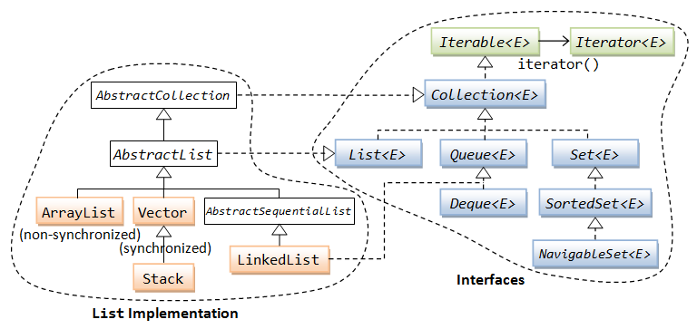
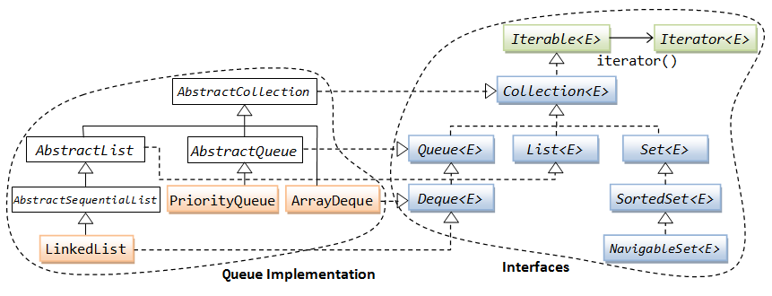

Introduction
Introduction to the Collection Framework
Although we can use an array to store a group of elements of the same type (either primitives or objects). The array, however, does not support so-called dynamic allocation - it has a fixed length which cannot be changed once allocated. Furthermore, array is a simple linear structure. Many applications may require more complex data structure such as linked list, stack, hash table, sets, or trees.
In Java, dynamically allocated data structures (such as ArrayList, LinkedList, Vector, Stack, HashSet, HashMap, Hashtable) are supported in a unified architecture called the Collection Framework, which mandates the common behaviors of all the classes.
A collection, as its name implied, is simply an object that holds a collection (or a group, a container) of objects. Each item in a collection is called an element. A framework, by definition, is a set of interfaces that force you to adopt some design practices. A well-designed framework can improve your productivity and provide ease of maintenance.
The collection framework provides a unified interface to store, retrieve and manipulate the elements of a collection, regardless of the underlying and actual implementation. This allows the programmers to program at the interfaces, instead of the actual implementation.
The Java Collection Framework package (java.util) contains:
- A set of interfaces,
- Implementation classes, and
- Algorithms (such as sorting and searching).
Similar Collection Framework is the C++ Standard Template Library (STL).
Prior to JDK 1.2, Java's data structures consist of array, Vector, and Hashtable that were designed in a non-unified way with inconsistent public interfaces. JDK 1.2 introduced the unified collection framework, and retrofits the legacy classes (Vector and Hashtable) to conform to this unified collection framework.
JDK 1.5 introduced Generics (which supports passing of types), and many related features (such as auto-boxing and unboxing, enhance for-loop). The collection framework is retrofitted to support generics and takes full advantages of these new features.
To understand this chapter, you have to be familiar with:
- Polymorphism, especially the upcasting and downcasting operations.
- Interfaces, abstract methods and their implementations.
- Generics, Auto-boxing & unboxing, and enhanced for-loop (introduced in JDK 1.5).
You need to refer to the JDK API specification while reading this chapter. The classes and interfaces for the Collection Framework are kept in package java.util.
Collection by Example - ArrayList (Pre-JDK 1.5)
Let's begin with an example of a Collection - an ArrayList. The ArrayList is a linear data structure, similar to the array, but resizable.
Recall that a Collection is an object that holds a collection (or a group, or a container) of elements. Below is an example of using an ArrayList to hold a collection of String objects.
1 2 3 4 5 6 7 8 9 10 11 12 13 14 15 16 17 18 19 20 21 22 |
// Pre-JDK 1.5 import java.util.List; import java.util.ArrayList; import java.util.Iterator; public class ArrayListPreJDK15Test { public static void main(String[] args) { List lst = new ArrayList(); // A List contains instances of Object. Upcast ArrayList to List lst.add("alpha"); // add() takes Object. String upcast to Object implicitly lst.add("beta"); lst.add("charlie"); System.out.println(lst); // [alpha, beta, charlie] // Get a "iterator" instance from List to iterate thru all the elements of the List Iterator iter = lst.iterator(); while (iter.hasNext()) { // any more element // Retrieve the next element, explicitly downcast from Object back to String String str = (String)iter.next(); System.out.println(str); } } } |
You may need to compile this program with option -Xlint:unchecked. You will receive some warning messages. We will resolve these warnings later.
Dissecting the Program
- Line 2-4 imports the collection framework classes and interfaces reside in the
java.utilpackage.  - The class hierarchy of the
ArrayListis shown above. We observe thatArrayListimplementsList,CollectionandIterableinterfaces. TheCollectionandIterableinterfaces define the common behaviors of all the collection implementations. InterfaceCollectiondefines how to add and remove an element into the collection. InterfaceIterabledefines a mechanism to iterate or transverse through all the elements of a collection. Instead of using the interfaceCollectiondirectly, it is more common to use one of its sub-interfaces,List(an ordered list supporting indexed access),Set(no duplicate elements) orQueue(FIFO, priority queues). - In line 8, we construct an
ArrayListinstance, and upcast it to theListinterface. This is possible as theArrayListimplementsListinterface. Remember that a good program operates on the interfaces instead of an actual implementation. The Collection Framework provides a set of interfaces so that you can program on these interfaces instead of the actual implementation. - The
Collectioninterface defines the common behaviors expected from a collection such as how to add and remove an element. It declaresabstractmethods such as:// Pre-JDK 1.5 boolean add(Object element) // adds an element boolean remove(Object element) // removes an element int size() // returns the size boolean isEmpty() // checks if empty
In pre-JDK 1.5, theadd(Object)method operates onjava.lang.Object, which is the Java's root class. Since all Java classes are subclasses ofObject, any Java class can be upcasted toObjectand added into a collection. The upcasting, which is always type-safe, is done implicitly by the compiler. - The super-interface
Iterabledefines a mechanism to iterate (or transverse) through all the elements of aCollectionvia a so-calledIteratorobject. TheIterableinterface contains only oneabstractmethod to retrieve theIteratorobject associated with the collection.Iterator iterator(); // returns an Iterator object to iterate thru all the elements of the collection - The
Iteratorinterface declares the followingabstractmethods:// Pre-JDK 1.5 boolean hasNext() // returns true if it has more elements Object next() // returns the next element void remove() // removes the last element returned by the iterator
ThehasNext()method returnstrueif there is more elements, and thenext()method returns the next element. Theremove()method removes the last element that was returned bynext()from the collection. Theremove()method shall be called only after a call tonext(). - Lines 15-20 retrieve the
Iteratorassociated with thisArrayList, and use a while-loop to iterate through all the elements of thisArrayList. Lines 15-20 is the standard approach to use anIteratorto traverse through all the elements in aCollection, regardless of its actual implementation. - In line 18, the
iter.next()method returns ajava.lang.Object. In pre-JDK 1.5, programmer has to explicitly downcast theObjectback to its original classString, before further manipulation can take place. - The above program works perfectly well if we decide to use
LinkedList,VectororStackimplementation (of theListinterface) instead ofArrayList. We only have to modify Line 8 to instantiate theListwith a different implementation. The rest of the codes needs not be changed. This is the beauty of programming on the interfaces instead of the actual implementations.List lst = new LinkedList(); // use "LinkedList" implementation // or List lst = new Vector(); // use "Vector" implementation // or List lst = new Stack(); // use "Stack" implementation
Summary
This example illustrates the unified architecture of the Collection Framework, defined in the interfaces Collection (and its sub-interfaces List, Set, Queue), Iterable, and Iterator. You can program on these interfaces instead of the actual implementations.
Prior to JDK 1.5, a collection is designed to hold java.lang.Object. Since Object is the Java’s root class, all Java classes, which are descendants of Object, can be upcasted to Object and kept in a collection. However, when you retrieve an element from a collection (in the form of Object) it is the programmer's responsibility to downcast the Object back to its original class, before further manipulation can take place.
Pre-JDK 1.5 Collections are not Type-safe
The pre-JDK 1.5 approach has the following drawbacks:
- The upcasting to
java.lang.Objectis done implicitly by the compiler. But, the programmer has to explicitly downcast theObjectretrieved back to their original class. - The compiler is not able to check whether the downcasting is valid at compile-time. Incorrect downcasting will show up only at runtime, as a
ClassCastException. This is known as dynamic binding or late binding. For example, if you accidentally added anIntegerobject into the above list which is intended to holdString, the error will show up only when you try to downcast theIntegertoString- at runtime. For example,// lst is designed to hold Strings lst.add(new Integer(88)); // adds an Integer, implicitly upcast to Object, okay in compile/runtime Iterator iter = lst.iterator(); while (iter.hasNext()) { String str = (String)iter.next(); // compile okay but runtime ClassCastException System.out.println(str); }
Why not let the compiler does the upcasting/downcasting and check for casting error, instead of leaving it to the runtime, which could be too late?
Introduction to Generics (JDK 1.5)
JDK 1.5 introduces a new feature called generics to resolve this problem. Generics allow us to pass type information, in the form of <type>, to the compiler, so that the compiler can perform all the necessary type-check during compilation to ensure type-safety at runtime.
For example, this statement with generics List<String> (read as List of Strings) and ArrayList<String> (read as ArrayList of Strings) informs the compiler that the List and ArrayList can hold only String object:
List<String> lst = new ArrayList<String>(); // read as List of Strings, ArrayList of Strings
You are certainly familiar with passing arguments into methods. You place the arguments inside the round bracket () and pass them to the method. In generics, instead of pass arguments, we pass type information inside the angle brackets <> to the compiler.
ArrayList with Generics (JDK 1.5)
Let's rewrite the earlier example using generics:
1 2 3 4 5 6 7 8 9 10 11 12 13 14 15 16 17 18 19 20 21 22 23 24 25 26 27 28 |
// Post-JDK 1.5 with Generics import java.util.List; import java.util.ArrayList; import java.util.Iterator; public class ArrayListPostJDK15Test { public static void main(String[] args) { List<String> lst = new ArrayList<String>(); // Inform compiler about the type lst.add("alpha"); // compiler checks if argument's type is String lst.add("beta"); lst.add("charlie"); System.out.println(lst); // [alpha, beta, charlie] Iterator<String> iter = lst.iterator(); // Iterator of Strings while (iter.hasNext()) { String str = iter.next(); // compiler inserts downcast operator System.out.println(str); } // lst.add(new Integer(1234)); // ERROR: compiler can detect wrong type // Integer intObj = lst.get(0); // ERROR: compiler can detect wrong type // Enhanced for-loop (JDK 1.5) for (String str : lst) { System.out.println(str); } } } |
In Lines 8 and 14, the type information about the collection classes is specified via generics, written as List<String>, ArrayList<String>, and Iterator<String>. Based on this type information, compiler is able to check the type of argument for the add() methods, and issues an compilation error for Line 20, when you attempt to add an Integer object. The compiler can also automatically insert the proper downcast operator in Line 16 and detect the wrong type in Line 21 in the get() methods in retrieving the elements of the collection. Take note that in the earlier pre-JDK 1.5 example, programmer needs to explicitly issue the downcast operator.
JDK 1.5 also introduced a new loop structure called enhanced for-loop (Lines 24-26). The loop variable str will take on each element of the lst in the loop-body.
Backward Compatibility
If you compile a pre-JDK 1.5 program using JDK 1.5 and above compiler, e.g.,
// Pre-JDK 1.5 List lst = new ArrayList(); // No type information lst.add("alpha"); // Without generics, compiler can't check if the type is correct
You may need to include the -Xlint:unchecked option. The compiler issues these warning messages to warn you about the unsafe operations (i.e., the compiler is unable to check for the type and ensure type-safety at runtime). You could go ahead and execute the program with warnings.
Note: ArrayListPreJDK15Test.java uses unchecked or unsafe operations.
Note: Recompile with -Xlint:unchecked for details.
ArrayListPreJDK15Test.java:6: warning: [unchecked] unchecked call to add(E) as a member of the raw type java.util.List
lst.add("alpha");
^
Auto-Boxing & Auto-Unboxing (JDK 1.5)
A collection contains only objects. It cannot holds primitives (such as int and double). Although arrays can be used to hold primitives, they are not resizable.
To put a primitive into a collection (such as ArrayList), you have to wrap the primitive into an object using the corresponding wrapper class as shown below:

Prior to JDK 1.5, you have to wrap a primitive value into an object and unwrap the primitive value from the wrapper object:
// Pre-JDK 1.5 Integer intObj = new Integer(5566); // wrap int to Integer int i = intObj.intValue(); // unwrap Integer to int Double doubleObj = new Double(55.66); // wrap double to Double double d = doubleObj.doubleValue(); // unwrap Double to double
The pre-JDK 1.5 approach involves quite a bit of codes to do the wrapping and unwrapping. JDK 1.5 introduces a new feature called auto-boxing and auto-unboxing to resolve this problem, by delegating the compiler to do the job. For example:
// JDK 1.5 Integer intObj = 5566; // autobox from int to Integer int i = intObj; // auto-unbox from Integer to int Double doubleObj = 55.66; // autoboxing from double to Double double d = doubleObj; // atuo-unbox from Double to double
Example - Pre JDK 1.5 Collections of Primitives
Pre-JDK 1.5 does not support generics, auto-boxing and for-each loop. The codes for collection can be quite messy and more importantly, not type-safe.
1 2 3 4 5 6 7 8 9 10 11 12 13 14 15 16 17 18 19 20 21 22 23 24 25 26 |
// Pre-JDK 1.5 import java.util.List; import java.util.ArrayList; import java.util.Iterator; import java.util.Random; public class PrimitiveCollectionPreJDK15 { public static void main(String[] args) { List lst = new ArrayList(); // Add 10 random primitive int into the List Random random = new Random(); for (int i = 1; i <= 10; ++i) { // Wrap the primitive int into Integer, upcast to Object lst.add(new Integer(random.nextInt(10))); } System.out.println(lst); Iterator iter = lst.iterator(); while (iter.hasNext()) { // Explicit downcast to Integer, then unwrap to int int i = ((Integer)iter.next()).intValue(); // un-safe at runtime System.out.println(i); } } } |
Example - Autoboxing & Unboxing of Primitives
With generics, autoboxing and for-each loop, JDK 1.5 codes for collection are more concise and more importantly - type-safe. For example,
1 2 3 4 5 6 7 8 9 10 11 12 13 14 15 16 17 18 19 20 21 22 23 24 25 26 27 28 29 30 31 32 33 34 35 36 |
// Post-JDK 1.5 import java.util.List; import java.util.ArrayList; import java.util.Iterator; import java.util.Random; public class PrimitiveCollectionJDK15 { public static void main(String[] args) { List<Integer> lst = new ArrayList<Integer>(); // Add 10 random primitive int into the List Random random = new Random(); for (int i = 1; i <= 10; ++i) { lst.add(random.nextInt(10)); // autobox to Integer, upcast to Object, type-safe } System.out.println(lst); // Transverse via iterator Iterator<Integer> iter = lst.iterator(); while (iter.hasNext()) { int i = iter.next(); // downcast to Integer, auto-unbox to int, type-safe System.out.println(i); } // Transverse via enhance for-loop for (int i : lst) { // downcast to Integer, auto-unbox to int, type-safe System.out.println(i); } // Retrieve via for-loop with List's index for (int i = 0; i < lst.size(); ++i) { int j = lst.get(i); // downcast to Integer, auto-unbox to int, type-safe System.out.println(j); } } } |
The Collection Interfaces
The hierarchy of the interfaces (and the commonly-used implementation classes) in the Collection Framework is as shown below:

Iterable<E> Interface
The Iterable<E> interface, which takes a generic type E and read as Iterable of element of type E, declares one abstract method called iterator() to retrieve the Iterator<E> object associated with all the collections. This Iterator object can then be used to transverse through all the elements of the associated collection.
Iterator<E> iterator(); // Returns the associated Iterator instance
// that can be used to transverse thru all the elements of the collection
All implementations of the collection (e.g., ArrayList, LinkedList, Vector) must implement this method, which returns an object that implements Iterator interface.
Iterator<E> Interface
The Iterator<E> interface, declares the following three abstract methods:
boolean hasNext() // Returns true if it has more elements E next() // Returns the next element of generic type E void remove() // Removes the last element returned by the iterator
As seen in the introductory example, you can use a while-loop to iterate through the elements with the Iterator as follows:
List<String> lst = new ArrayList<String>();
lst.add("alpha");
lst.add("beta");
lst.add("charlie");
// Retrieve the Iterator associated with this List via the iterator() method
Iterator<String> iter = lst.iterator();
// Transverse thru this List via the Iterator
while (iter.hasNext()) {
// Retrieve each element and process
String str = iter.next();
System.out.println(str);
}
Enhanced for-loop (JDK 1.5)
Besides using the Iterator (as described in the previous section), JDK 1.5 also introduces a new enhance for-loop, which you can use to transverse thru all the elements of a collection (as well as an array).
The syntax is as follows (read as for each element in the collection):
for ( type item : aCollection ) {
body ;
}
The loop variable item will take on each of the element of the collection, in each iteration of the loop-body. See the introductory section on example.
Modifying Objects in the Collection?
The enhanced for-loop provides a convenience way to transverse through a collection of elements. But it hides the Iterator, hence, you CANNOT remove (via Iterator.remove()) or replace the elements.
On the other hand, as the loop variable receives a "cloned" copy of the object reference, the enhanced for-loop can be used to modify "mutable" elements (such as StringBuilder) via the "cloned" object references, but it cannot modify "immutable" objects (such as String and primitive wrapper classes) as new references are created.
Example - Using Enhanced for-loop on Collection of "Mutable" Objects (such as StringBuilder)
1 2 3 4 5 6 7 8 9 10 11 12 13 14 15 16 17 |
import java.util.List;
import java.util.ArrayList;
public class ForEachMutableTest {
public static void main(String[] args) {
List<StringBuilder> lst = new ArrayList<StringBuilder>();
lst.add(new StringBuilder("alpha"));
lst.add(new StringBuilder("beta"));
lst.add(new StringBuilder("charlie"));
System.out.println(lst); // [alpha, beta, charlie]
for (StringBuilder sb : lst) {
sb.append("88"); // can modify "mutable" objects
}
System.out.println(lst); // [alpha88, beta88, charlie88]
}
}
|
Example - Using Enhanced for-loop on Collection of "Immutable" Objects (such as String)
1 2 3 4 5 6 7 8 9 10 11 12 13 14 15 16 17 |
import java.util.List;
import java.util.ArrayList;
public class ForEachImmutableTest {
public static void main(String[] args) {
List<String> lst = new ArrayList<String>();
lst.add("alpha");
lst.add("beta");
lst.add("charlie");
System.out.println(lst); // [alpha, beta, charlie]
for (String str : lst) {
str += "change!"; // cannot modify "immutable" objects
}
System.out.println(lst); // [alpha, beta, charlie]
}
}
|
Collection<E> Interface
The Collection<E>, which takes a generic type E and read as Collection of element of type E, is the root interface of the Collection Framework. It defines the common behaviors expected of all classes, such as how to add or remove an element, via the following abstract methods:
// Basic Operations int size() // Returns the number of elements of this Collection void clear() // Removes all the elements of this Collection boolean isEmpty() // Returns true if there is no element in this Collection boolean add(E element) // Ensures that this Collection contains the given element boolean remove(Object element) // Removes the given element, if present boolean contains(Object element) // Returns true if this Collection contains the given element // Bulk Operations with another Collection boolean containsAll(Collection<?> c) // Collection of any "unknown" object boolean addAll(Collection<? extends E> c) // Collection of E or its sub-types boolean removeAll(Collection<?> c) boolean retainAll(Collection<?> c) // Comparison - Objects that are equal shall have the same hashCode boolean equals(Object o) int hashCode() // Array Operations Object[] toArray() // Convert to an Object array <T> T[] toArray(T[] a) // Convert to an array of the given type T
Collection of Primitives?
A Collection<E> can only contain objects, not primitive values (such as int or double). Primitive values are to be wrapped into objects (via the respective wrapper classes such as Integer and Double). JDK 1.5 introduces auto-boxing and auto-unboxing to simplify the wrapping and unwrapping processes. Read "Auto-Boxing and Auto-Unboxing" section for example.
List<E>, Set<E> & Queue<E> - Sub-interfaces of Collection<E>
In practice, we typically program on one of the sub-interfaces of the Collection interface: List<E>, Set<E>, or Queue<E>, which provide further specifications.
List<E>: models a resizable linear array, which allows indexed access.Listcan contain duplicate elements. Frequently-used implementations ofListincludeArrayList,LinkedList,VectorandStack.Set<E>: models a mathematical set, where no duplicate elements are allowed. Frequently-used implementations ofSetareHashSetandLinkedHashSet. The sub-interfaceSortedSet<E>models an ordered and sorted set of elements, implemented byTreeSet.Queue<E>: models queues such as First-in-First-out (FIFO) queue and priority queue. It sub-interfaceDeque<E>models queues that can be operated on both ends. Implementations includePriorityQueue,ArrayDequeandLinkedList.
The details of these sub-interfaces and implementations will be covered later in the implementation section.
Map<K,V> Interface
The interface Map<K,V>, which takes two generic types K and V and read as Map of Key type K and Value type V, is used as a collection of of "key-value pairs". No duplicate key is allowed. Frequently-used implementations include HashMap, Hashtable and LinkedHashMap. Its sub-interface SortedMap<K, V> models an ordered and sorted map, based on its key, implemented in TreeMap.
Take note that Map<K,V> is not a sub-interface of Collection<E>, as it involves a pair of objects for each element. The details will be covered later.
List<E> Interface and Implementations
In practice, it is more common to program on the one of the sub-interfaces of Collection: List, Set, or Queue, instead of the super-interface Collection. These sub-interfaces further refine the behaviors of the Collection.
A List<E> models a resizable linear array, which supports indexed access. Elements in a list can be retrieved and inserted at a specific index position based on an int index. It can contain duplicate elements. It can contain null elements. You can search a list, iterate through its elements, and perform operations on a selected range of values in the list.
Lists are the most commonly-used data structures.
The List<E> interface declares the following abstract methods, in additional to its super-interfaces. Since List has a positional index. Operation such as add(), remove(), set() can be applied to an element at a specified index position.
// Operations at a specified index position void add(int index, E element) // add E set(int index, E element) // replace E get(int index) // retrieve without remove E remove(int index) // remove last retrieved int indexOf(Object obj) int lastIndexOf(Object obj) // Operations on a range fromIndex (inclusive) toIndex (exclusive) List<E> subList(int fromIndex, int toIndex) ...... // Operations inherited from Collection<E> int size() boolean isEmpty() boolean add(E element) boolean remove(Object obj) boolean contains(Object obj) void clear(); ......
The abstract superclass AbstractList provides implementation to many of the abstract methods declared in the List, Collector, and Iterable interfaces. However, some methods such as get(int index) remains abstract. These methods will be implemented by the concrete subclasses such as ArrayList and Vector.
ArrayList<E> & Vector<E> - Implementation Classes for List<E>
ArrayList<E> is the best all-around implementation of the List<E> interface. Many useful methods are already implemented in AbstractList but overridden for efficiency in ArrayList (e.g., add(), remove(), set() etc.).
Vector<E> is a legacy class (since JDK 1.0), which is retrofitted to conform to the Collection Framework (in JDK 1.2). Vector is a synchronized implementation of the List interface. It also contains additional legacy methods (e.g., addElement(), removeElement(), setElement(), elementAt(), firstElement(), lastElement(), insertElementAt()). There is no reason to use these legacy methods - other than to maintain backward compatibility.
ArrayList is not synchronized. The integrity of ArrayList instances is not guaranteed under multithreading. Instead, it is the programmer's responsibility to ensure synchronization. On the other hand, Vector is synchronized internally. Read "Synchronized Collection" if you are dealing with multi-threads.
Java Performance Tuning Tip: Synchronization involves overheads. Hence, if synchronization is not an issue, you should use ArrayList instead of Vector for better performance.
[TODO] Example
Stack<E> - Implementation Class for List<E>
Stack<E> is a last-in-first-out queue (LIFO) of elements. Stack extends Vector, which is a synchronized resizable array, with five additional methods:
E push(E element) // pushes the specified element onto the top of the stack E pop() // removes and returns the element at the top of the stack E peek() // returns the element at the top of stack without removing boolean empty() // tests if this stack is empty int search(Object obj) // returns the distance of the specified object from the top // of stack (distance of 1 for TOS), or -1 if not found
[TODO] Example
LinkedList<E> - Implementation Class for List<E>
LinkedList<E> is a double-linked list implementation of the List<E> interface, which is efficient for insertion and deletion of elements, in the expense of more complex structure.
LinkedList<E> also implements Queue<E> and Deque<E> interfaces, and can be processed from both ends of the queue. It can serve as FIFO or LIFO queue.
[TODO] Example
Converting a List to an Array - toArray()
The super-interface Collection defines a method called toArray() to create an array based on this list. The returned array is free for modification.
Object[] toArray() // Object[] version <T> T[] toArray(T[] a) // Generic type version
Example - List to array
1 2 3 4 5 6 7 8 9 10 11 12 13 14 15 16 17 18 19 20 21 |
import java.util.List;
import java.util.ArrayList;
import java.util.Arrays;
public class TestToArray {
public static void main(String[] args) {
List<String> lst = new ArrayList<String>();
lst.add("alpha");
lst.add("beta");
lst.add("charlie");
// Use the Object[] version
Object[] strArray1 = lst.toArray();
System.out.println(Arrays.toString(strArray1)); // [alpha, beta, charlie]
// Use the generic type verion - Need to specify the type in the argument
String[] strArray2 = lst.toArray(new String[0]);
strArray2[0] = "delta"; // modify the returned array
System.out.println(Arrays.toString(strArray2)); // [delta, beta, charlie]
System.out.println(lst); // [alpha, beta, charlie] - no change in the original list
}
}
|
Using an Array as a List - Arrays.asList()
The utility class java.util.Arrays provides a static method Arrays.asList() to convert an array into a List<T>. However, change to the list write-thru the array and vice versa. Take note that the name of the method is asList and not toList.
// Returns a fixed-size list backed by the specified array.
// Change to the list write-thru to the array.
public static <T> List<T> asList(T[] a)
Example - Array as List
1 2 3 4 5 6 7 8 9 10 11 12 13 14 15 16 17 18 19 20 21 22 |
import java.util.List;
import java.util.ArrayList;
import java.util.Arrays;
public class TestArrayAsList {
public static void main(String[] args) {
String[] strs = {"alpha", "beta", "charlie"};
System.out.println(Arrays.toString(strs)); // [alpha, beta, charlie]
List<String> lst = Arrays.asList(strs);
System.out.println(lst); // [alpha, beta, charlie]
// Changes in array or list write thru
strs[0] += "88";
lst.set(2, lst.get(2) + "99");
System.out.println(Arrays.toString(strs)); // [alpha88, beta, charlie99]
System.out.println(lst); // [alpha88, beta, charlie99]
// Initialize a list using an array
List<Integer> lstInt = Arrays.asList(22, 44, 11, 33);
System.out.println(lstInt); // [22, 44, 11, 33]
}
}
|
Comparison of ArrayList, Vector, LinkedList and Stack
[TODO] Example on benchmarking ArrayList, Vector, LinkedList, and Stack
Ordering, Sorting & Searching
The notion of ordering is needed in these two situation:
- In order to sort a
Collectionor an array (using theCollections.sort()orArrays.sort()methods), an ordering specification is needed. - Some collections, in particular,
SortedSet(TreeSet) andSortMap(TreeMap), are ordered. That is, the objects are stored according to a specified order.
There are two ways to specify the ordering of objects:
- Make the objects implement the
java.lang.Comparableinterface, and override thecompareTo()method to specify the ordering of comparing two objects. - Create a special
java.util.Comparatorobject, with a methodcompare()to specify the ordering of comparing two objects.
java.lang.Comparable<T> Interface
A java.lang.Comparable<T> interface specifies how two two objects are to be compared for ordering. It define one abstract method:
int compareTo(T o) // Returns a negative integer, zero, or a positive integer
// as this object is less than, equal to, or greater than the given object
This ordering is referred to as the class's natural ordering, and the class's compareTo() method is referred to as its natural comparison method.
It is strongly recommended that compareTo() be consistent with equals() and hashCode() (inherited from java.lang.Object):
- If
compareTo()returns a zero,equals()should returntrue. - If
equals()returnstrue,hashCode()shall produce the sameint.
All the eight primitive wrapper classes (Byte, Short, Integer, Long, Float, Double, Character and Boolean) implement Comparable interface, with the compareTo() uses the numeric order.
Example - Comparable
The utility class java.util.Arrays and java.util.Collections provide many static method for the various algorithms such as sorting and searching (Refer to "Algorithms" for details).
In this example, we use the Arrays.sort() and Collections.sort() methods to sort an array of Strings and a List of Integers, based on their default Comparable. The default Comparable of String compares two Strings based on their underlying Unicodes, i.e., uppercase letter is smaller than the lowercase counterpart.
1 2 3 4 5 6 7 8 9 10 11 12 13 14 15 16 17 18 19 20 21 22 23 24 25 26 27 28 29 30 |
import java.util.Arrays;
import java.util.List;
import java.util.ArrayList;
import java.util.Collections;
public class TestComparable {
public static void main(String[] args) {
// Sort and search an "array" of Strings
String[] array = {"Hello", "hello", "Hi", "HI"};
// Use the Comparable defined in the String class
Arrays.sort(array);
System.out.println(Arrays.toString(array)); // [HI, Hello, Hi, hello]
// Try binary search - the array must be sorted
System.out.println(Arrays.binarySearch(array, "Hello")); // 1
System.out.println(Arrays.binarySearch(array, "HELLO")); // -1 (insertion at index 0)
// Sort and search a "List" of Integers
List<Integer> lst = new ArrayList<Integer>();
lst.add(22); // auto-box
lst.add(11);
lst.add(44);
lst.add(33);
Collections.sort(lst); // Use the Comparable of Integer class
System.out.println(lst); // [11, 22, 33, 44]
System.out.println(Collections.binarySearch(lst, 22)); // 1
System.out.println(Collections.binarySearch(lst, 35)); // -4 (insertion at index 3)
}
}
|
java.util.Comparator<T> Interface
Besides the Comparable (or the natural ordering), you can pass a Comparator object into the sorting methods (Collections.sort() or Arrays.sort()) to provide precise control over the ordering. The Comparator will override the Comparable, if available.
The java.util.Comparator interface declares:
int compare(T o1, T o2) // Returns a negative integer, zero, or a positive integer as the
// first argument is less than, equal to, or greater than the second.
Take note that you need to construct an instance of Comparator<T>, and invoke compare() to compare o1 and o2. [In the earlier Comparable, the method is called compareTo() and it takes only one argument, i.e., this object compare to the given object.]
Example - Comparator
In this example, instead of using the default Comparable, we define our customized Comparator for Strings and Integers.
1 2 3 4 5 6 7 8 9 10 11 12 13 14 15 16 17 18 19 20 21 22 23 24 25 26 27 28 29 30 31 32 33 34 35 36 37 38 39 40 41 42 43 44 45 46 47 48 49 50 |
import java.util.Arrays;
import java.util.List;
import java.util.ArrayList;
import java.util.Collections;
import java.util.Comparator;
public class TestComparator {
// Define a Comparator<String> to order strings in case-insensitive manner
public static class StringComparator implements Comparator<String> {
@Override
public int compare(String s1, String s2) {
return s1.compareToIgnoreCase(s2);
}
}
// Define a Comparator<Integer> to order Integers based on the least significant digit
public static class IntegerComparator implements Comparator<Integer> {
@Override
public int compare(Integer s1, Integer s2) {
return s1%10 - s2%10;
}
}
public static void main(String[] args) {
// Use a customized Comparator for Strings
Comparator<String> compStr = new StringComparator();
// Sort and search an "array" of Strings
String[] array = {"Hello", "Hi", "HI", "hello"};
Arrays.sort(array, compStr);
System.out.println(Arrays.toString(array)); // [Hello, hello, Hi, HI]
System.out.println(Arrays.binarySearch(array, "Hello", compStr)); // 1
System.out.println(Arrays.binarySearch(array, "HELLO", compStr)); // 1 (case-insensitive)
// Use a customized Comparator for Integers
Comparator<Integer> compInt = new IntegerComparator();
// Sort and search a "List" of Integers
List<Integer> lst = new ArrayList<Integer>();
lst.add(42); // auto-box
lst.add(21);
lst.add(34);
lst.add(13);
Collections.sort(lst, compInt);
System.out.println(lst); // [21, 42, 13, 34]
System.out.println(Collections.binarySearch(lst, 22, compInt)); // 1
System.out.println(Collections.binarySearch(lst, 35, compInt)); // -5 (insertion at index 4)
}
}
|
Try: Modify the Comparator to sort in A, a ,B, b, C, c ... (uppercase letter before the lowercase).
Set<E> Interfaces & Implementations
The Set<E> interface models a mathematical set, where no duplicate elements are allowed (e.g., playing cards). It may contain a single null element.
The Set<E> interface declares the following abstract methods. The insertion, deletion and inspection methods returns false if the operation fails, instead of throws an exception.
boolean add(E o) // add the specified element if it is not already present boolean remove(Object o) // remove the specified element if it is present boolean contains(Object o) // return true if it contains o // Set operations boolean addAll(Collection<? extends E> c) // Set union boolean retainAll(Collection<?> c) // Set intersection
The implementations of Set<E> interface include:
HashSet<E>: Stores the elements in a hash table (hashed via thehashcode()).HashSetis is the best all-round implementation forSet.LinkedHashSet<E>: Stores the elements in a linked-list hash table for better efficiency in insertion and deletion. The element are hashed via thehashCode()and arranged in the linked list according to the insertion-order.TreeSet<E>: Also implements sub-interfacesNavigableSetandSortedSet. Stores the elements in a red-black tree data structure, which are sorted and navigable. Efficient in search, add and remove operations (inO(log(n))).
HashSet<E> By Example
Let's write a Book class, and create a Set of Book objects.
1 2 3 4 5 6 7 8 9 10 11 12 13 14 15 16 17 18 19 20 21 22 23 24 25 26 27 28 29 30 |
public class Book {
private int id;
private String title;
// Constructor
public Book(int id, String title) {
this.id = id;
this.title = title;
}
@Override
public String toString() {
return id + ": " + title;
}
// Two book are equal if they have the same id
@Override
public boolean equals(Object o) {
if (!(o instanceof Book)) {
return false;
}
return this.id == ((Book)o).id;
}
// Consistent with equals(). Two objects which are equal have the same hash code.
@Override
public int hashCode() {
return id;
}
}
|
We need to provide an equals() method, so that the Set implementation can test for equality and duplication. In this example, we choose the id as the distinguishing feature. We override equals() to return true if two books have the same id. We also override the hashCode() to be consistent with equals().
1 2 3 4 5 6 7 8 9 10 11 12 13 14 15 16 17 18 19 20 21 22 23 24 25 26 27 28 29 30 31 32 33 34 35 36 |
import java.util.HashSet;
import java.util.Set;
public class TestHashSet {
public static void main(String[] args) {
Book book1 = new Book(1, "Java for Dummies");
Book book1Dup = new Book(1, "Java for the Dummies"); // same id as above
Book book2 = new Book(2, "Java for more Dummies");
Book book3 = new Book(3, "more Java for more Dummies");
Set<Book> set1 = new HashSet<Book>();
set1.add(book1);
set1.add(book1Dup); // duplicate id, not added
set1.add(book1); // added twice, not added
set1.add(book3);
set1.add(null); // Set can contain a null
set1.add(null); // but no duplicate
set1.add(book2);
System.out.println(set1); // [null, 1: Java for Dummies,
// 2: Java for more Dummies, 3: more Java for more Dummies]
set1.remove(book1);
set1.remove(book3);
System.out.println(set1); // [null, 2: Java for more Dummies]
Set<Book> set2 = new HashSet<Book>();
set2.add(book3);
System.out.println(set2); // [3: more Java for more Dummies]
set2.addAll(set1); // "union" with set1
System.out.println(set2); // [null, 2: Java for more Dummies, 3: more Java for more Dummies]
set2.remove(null);
System.out.println(set2); // [2: Java for more Dummies, 3: more Java for more Dummies]
set2.retainAll(set1); // "intersection" with set1
System.out.println(set2); // [2: Java for more Dummies]
}
}
|
A Set cannot hold duplicate element. The elements are check for duplication via the overridden equal(). A Set can hold a null value as its element (but no duplicate too). The addAll() and retainAll() perform set union and set intersection operations, respectively.
Take note that the arrangement of the elements is arbitrary, and does not correspond to the order of add().
LinkedHashSet<E> By Example
Unlike HashSet, LinkedHashSet builds a link-list over the hash table for better efficiency in insertion and deletion (in the expense of more complex structure). It maintains its elements in the insertion-order (i.e., order of add()).
1 2 3 4 5 6 7 8 9 10 11 12 13 14 15 16 17 18 19 20 21 |
import java.util.LinkedHashSet;
import java.util.Set;
public class TestLinkedHashSet {
public static void main(String[] args) {
Book book1 = new Book(1, "Java for Dummies");
Book book1Dup = new Book(1, "Java for the Dummies"); // same id as above
Book book2 = new Book(2, "Java for more Dummies");
Book book3 = new Book(3, "more Java for more Dummies");
Set<Book> set = new LinkedHashSet<Book>();
set.add(book1);
set.add(book1Dup); // duplicate id, not added
set.add(book1); // added twice, not added
set.add(book3);
set.add(null); // Set can contain a null
set.add(null); // but no duplicate
set.add(book2);
System.out.println(set); // [1: Java for Dummies, 3: more Java for more Dummies,
// null, 2: Java for more Dummies]
}
}
|
The output clearly shows that the set is ordered according to the order of add().
NavigableSet<E> & SortedSet<E> Interfaces
Elements in the SortedSet<E> are sorted during add(), either using the natural ordering in the Comparable, or given a Comparator object. Read "Ordering, Sorting and Searching" for details on Comparable and Comparator.
The NavigableSet<E> is a sub-interface of Set, which declares these additional navigation methods:
Iterator<E> descendingIterator() // Returns an iterator over the elements in this set, // in descending order. Iterator<E> iterator() // Returns an iterator over the elements in this set, in ascending order. // Per-element operation E floor(E e) // Returns the greatest element in this set less than or equal to the given element, // or null if there is no such element. E ceiling(E e) // Returns the least element in this set greater than or equal to the given element, // or null if there is no such element. E lower(E e) // Returns the greatest element in this set strictly less than the given element, // or null if there is no such element. E higher(E e) // Returns the least element in this set strictly greater than the given element, // or null if there is no such element. // Subset operation SortedSet<E> headSet(E toElement) // Returns a view of the portion of this set // whose elements are strictly less than toElement. SortedSet<E> tailSet(E fromElement) // Returns a view of the portion of this set // whose elements are greater than or equal to fromElement. SortedSet<E> subSet(E fromElement, E toElement) // Returns a view of the portion of this set // whose elements range from fromElement, inclusive, to toElement, exclusive.
TreeSet<E> by Example
TreeSet<E> is an implementation to NavigableSet<E> and SortedSet<E>.
Example - TreeSet with Comparable
1 2 3 4 5 6 7 8 9 10 11 12 13 14 15 16 17 18 19 20 21 22 23 24 25 26 27 28 29 30 |
public class AddressBookEntry implements Comparable<AddressBookEntry> {
private String name, address, phone;
public AddressBookEntry(String name) {
this.name = name;
}
@Override
public String toString() {
return name;
}
@Override
public int compareTo(AddressBookEntry another) {
return this.name.compareToIgnoreCase(another.name);
}
@Override
public boolean equals(Object o) {
if (!(o instanceof AddressBookEntry)) {
return false;
}
return this.name.equalsIgnoreCase(((AddressBookEntry)o).name);
}
@Override
public int hashCode() {
return name.length();
}
}
|
This AddressBookEntry class implements Comparable, in order to be used in TreeSet. It overrides compareTo() to compare the name in a case insensitive manner. It also overrides equals() and hashCode(), so as they are consistent with the compareTo().
1 2 3 4 5 6 7 8 9 10 11 12 13 14 15 16 17 18 19 20 |
import java.util.TreeSet;
public class TestTreeSetComparable {
public static void main(String[] args) {
AddressBookEntry addr1 = new AddressBookEntry("peter");
AddressBookEntry addr2 = new AddressBookEntry("PAUL");
AddressBookEntry addr3 = new AddressBookEntry("Patrick");
TreeSet<AddressBookEntry> set = new TreeSet<AddressBookEntry>();
set.add(addr1);
set.add(addr2);
set.add(addr3);
System.out.println(set); // [Patrick, PAUL, peter]
System.out.println(set.floor(addr2)); // PAUL
System.out.println(set.lower(addr2)); // Patrick
System.out.println(set.headSet(addr2)); // [Patrick]
System.out.println(set.tailSet(addr2)); // [PAUL, peter]
}
}
|
Observe that the AddressBookEntry objects are sorted and stored in the order depicted by the Comparable during add() operation.
Example - TreeSet with Comparator
Let rewrite the previous example to use a Comparator object instead of Comparable. We shall set the Comparator to order in descending order of name for illustration.
1 2 3 4 5 6 7 8 9 10 11 12 |
public class PhoneBookEntry {
public String name, address, phone;
public PhoneBookEntry(String name) {
this.name = name;
}
@Override
public String toString() {
return name;
}
}
|
The PhoneBookEntry class does not implement Comparator. You cannot add() a PhoneBookEntry object into a TreeSet() as in the above example. Instead, we define a Comparator class, and use an instance of Comparator to construct a TreeSet.
The Comparator orders the PhoneBookEntry objects in descending name and case insensitive.
1 2 3 4 5 6 7 8 9 10 11 12 13 14 15 16 17 18 19 20 21 22 23 24 25 26 27 28 |
import java.util.Set;
import java.util.TreeSet;
import java.util.Comparator;
public class TestTreeSetComparator {
public static class PhoneBookComparator implements Comparator<PhoneBookEntry> {
@Override
public int compare(PhoneBookEntry p1, PhoneBookEntry p2) {
return p2.name.compareToIgnoreCase(p1.name); // descending name
}
}
public static void main(String[] args) {
PhoneBookEntry addr1 = new PhoneBookEntry("peter");
PhoneBookEntry addr2 = new PhoneBookEntry("PAUL");
PhoneBookEntry addr3 = new PhoneBookEntry("Patrick");
Comparator<PhoneBookEntry> comp = new PhoneBookComparator();
TreeSet<PhoneBookEntry> set = new TreeSet<PhoneBookEntry>(comp);
set.add(addr1);
set.add(addr2);
set.add(addr3);
System.out.println(set); // [peter, PAUL, Patrick]
Set<PhoneBookEntry> newSet = set.descendingSet(); // Reverse the order
System.out.println(newSet); // [Patrick, PAUL, peter]
}
}
|
In the test program, we construct a TreeSet with the BookComparator. We also tried the descendingSet() method to obtain a new Set in reverse order.
Queue<E> Interfaces & Implementations
A queue is a collection whose elements are added and removed in a specific order, typically in a first-in-first-out (FIFO) manner. A deque (pronounced "deck" ) is a double-ended queue that elements can be inserted and removed at both ends (head and tail) of the queue.
Besides basic Collection<E> operations, Queue<E> provide additional insertion, extraction, and inspection operations. Each of these methods exists in two forms: one throws an exception if the operation fails, the other returns a special value (either null or false, depending on the operations). The latter form of the insert operation is designed specifically for use with capacity-restricted Queue implementations
// Insertion at the end of the queue boolean add(E e) // throws IllegalStateException if no space is currently available boolean offer(E e) // returns true if the element was added to this queue, else false // Extract element at the head of the queue E remove() // throws NoSuchElementException if this queue is empty E poll() // returns the head of this queue, or null if this queue is empty // Inspection (retrieve the element at the head, but does not remove) E element() // throws NoSuchElementException if this queue is empty E peek() // returns the head of this queue, or null if this queue is empty
Deque<E> declares additional methods to operate on both ends (head and tail) of the queue.
// Insertion void addFirst(E e) void addLast(E e) boolean offerFirst(E e) boolean offerLast(E e) // Retrieve and Remove E removeFirst() E removeLast() E pollFirst() E pollLast() // Retrieve but does not remove E getFirst() E getLast() E peekFirst() E peekLast()
A Deque can be used as FIFO queue (via methods add(e), remove(), element(), offer(e), poll(), peek()) or LIFO queue (via methods push(e), pop(), peek()).
The Queue<E> and Deque<E> implementations include:
PriorityQueue<E>: A queue where the elements are ordered based on an ordering you specify, instead of FIFO.ArrayDeque<E>: A queue and deque implemented as a dynamic array, similar toArrayList<E>.LinkedList<E>: TheLinkedList<E>also implements theQueue<E>andDeque<E>interfaces, in additional toList<E>interface, providing a queue or deque that is implemented as a double- linked list data structure.
The basic operations of Queue<E> include adding an element, polling the queue to retrieve the next element, or peeking at the queue to see if there is an element available in the queue. The Deque<E> operations are similar except element can be added, polled, or peeked at both ends of the deque.
[TODO] Example
Map<K,V> Interfaces & Implementations
A map is a collection of key-value pairs (e.g., name-address, name-phone, isbn-title, word-count). Each key maps to one and only value. Duplicate keys are not allowed, but duplicate values are allowed. Maps are similar to linear arrays, except that an array uses an integer key to index and access its elements; whereas a map uses any arbitrary key (such as Strings or any objects).

The Map<K,V> interface declares the following abstract methods:
V get(Object key) // Returns the value of the specified key V put(K key, V value) // Associate the specified value with the specified key boolean containsKey(Object key) // Is this map has specified key? boolean containsValue(Object value) // Views Set<K> keySet() // Returns a set view of the keys Collection<V> values() // Returns a collection view of the values Set entrySet() // Returns a set view of the key-value
The implementations of Map<K,V> interface include:
HashMap<K,V>: Hash table implementation of theMap<K,V>interface. The best all-around implementation. Methods inHashMapis not synchronized.TreeMap<K,V>: Red-black tree implementation of theSortedMap<K,V>interface.LinkedHashMap<K,V>: Hash table with link-list to facilitate insertion and deletion.Hashtable<K,V>: Retrofitted legacy (JDK 1.0) implementations. A synchronized hash table implementation of theMap<K,V>interface that does not allownullkey or values, with legacy methods.
For example,
HashMap<String, String> aMap = new HashMap<String, String>();
aMap.put("1", "Monday");
aMap.put("2", "Tuesday");
aMap.put("3", "Wednesday");
String str1 = aMap.get("1"); // No need downcast
System.out.println(str1);
String str2 = aMap.get("2");
System.out.println(str2);
String str3 = aMap.get("3");
System.out.println(str3);
Set<String> keys = aMap.keySet();
for (String str : keys) {
System.out.print(str);
System.out.print(":");
System.out.println(aMap.get(str));
}
There is no List-like iterator for Map. You need to obtain a view of key or value before you can apply the iterator.
Example - HashMap
1 2 3 4 5 6 7 8 9 10 11 12 13 14 15 16 17 18 19 20 |
// Counts the frequency of each of the words in a file given in the command-line, // and saves in a map of {word, freq}. import java.util.Map; import java.util.HashMap; import java.util.Scanner; import java.io.File; public class WordCount { public static void main(String[] args) throws Exception { Scanner in = new Scanner(new File(args[0])); Map<String, Integer> map = new HashMap<String, Integer>(); while (in.hasNext()) { String word = in.next(); int freq = (map.get(word) == null) ? 1 : map.get(word) + 1; // type-safe map.put(word, freq); // autobox int to Integer and upcast, type-check } System.out.println(map); } } |
Algorithms
The Collection Framework provides two utility classes: java.util.Arrays and java.util.Collections, which provide common algorithms, such as sorting and searching, on arrays and Collections. (Take note that the interface is called Collection, while the utility class is called Collections with a 's').
java.util.Arrays Utility Class
The java.util.Arrays class contains static methods for sorting and searching arrays, among others.
Array is a reference type in Java. It can hold primitives, as well as objects. Nine types of arrays were defined in Java, one for of each of the eight primitives (byte, short, int, long, float, double, char, boolean), and one for Object.
Sorting - Arrays.sort()
There is a pair of sort() methods for each of the primitive types (exception boolean) and Object. For example, for int[]:
// Sort the given array into ascending order public static void sort(int[] a) // Sort between fromIndex (inclusive) and toTodex (exclusive) public static void sort(int[] a, int fromIndex, int toIndex)
Similar sort() methods are available for byte[], short[], long[], float[], double[], char[] (except boolean[]) and Object[]. For Object[], the objects must implement Comparable interface so that the ordering can be determined via the compareTo() method.
public static void sort(Object[] a) public static void sort(Object[] a, int fromIndex, int toIndex)
A pair of methods is also defined for generic objects, to be sorted based on the given Comparator (instead of Comparable).
public static <T> void sort(T[] a, Comparator<? super T> c) public static <T> void sort(T[] a, int fromIndex, int toIndex, Comparator<? super T> c)
Suppose that you wish to sort an array of Integer (T is Integer), you could use a Comparator<Integer> (this compares with Integer) or Comparator<Number> or Comparator<Object>, as Object and Number are superclass of Integer.
Example: See previous section on Comparable and Comparator.
Searching - Arrays.binarySearch()
Similarly, there is a pair of searching method for each of the primitive types (except boolean) and Object. The array must be sorted before you can apply the binarySearch() method.
public static int binarySearch(int[] a, int key) public static int binarySearch(int[] a, int fromIndex, int toIndex, int key) // Similar methods for byte[], short[], long[], float[], double[] and char[] // Searching objects, which implements Comparable public static int binarySearch(Object[] a, Object key) public static int binarySearch(Object[] a, int fromIndex, int toIndex, Object key) // Searching generic objects, based on the given Comparator public static <T> int binarySearch(T[] a, T key, Comparator<? super T> c) public static <T> int binarySearch(T[] a, T key, int fromIndex, int toIndex, Comparator<? super T> c)
Example: [TODO]
Equality Comparison - Arrays.equals()
public static boolean equals(int[] a1, int[] a2)
// Similar methods for byte[], short[], long[], float[], double[], char[], boolean[] and Object[]
Copying - Arrays.copyOf() and Arrays.copyOfRange()
public static int[] copyOf(int[] original, int newLength) // Copies the given array, truncating or padding with zeros (if necessary) so the copy has the specified length public static int[] copyOfRange(int[] original, int from, int to) // padded with 0 if to is beyond the length // Similar methods for byte[], short[], long[], float[], double[], char[] and boolean[] public static <T> T[] copyOf(T[] original, int newLength) public static <T> T[] copyOfRange(T[] original, int from, int to) public static <T,U> T[] copyOf(U[] original, int newLength, Class<? extends T[]> newType) public static <T,U> T[] copyOfRange(U[] original, int from, int to, Class<? extends T[]> newType)
Filling - Arrays.fill()
public static void fill(int[] a, int value)
public static void fill(int[] a, int fromIndex, int toIndex, int value)
// Similar methods for byte[], short[], long[], float[], double[], char[] and boolean[] and Object[]
Description - Arrays.toString()
// Returns a string representation of the contents of the specified array. public static String toString(int[] a) // Similar methods for byte[], short[], long[], float[], double[], char[] and boolean[] and Object[]
Converting to List - Arrays.asList()
// Returns a fixed-size list backed by the specified array.
// Change to the list write-thru to the array.
public static <T> List<T> asList(T[] a)
java.util.Collections Utility Class
Similar to java.util.Arrays, the java.util.Collections class provides static methods to operate on Collections, such as sorting (sort()), searching (binarySearch()), among others.
Sorting - Collections.sort()
// Sorts the specified list into ascending order. The objects shall implement Comparable. public static <T extends Comparable<? super T>> void sort(List<T> list) // Sorts the specified list according to the order induced by the specified comparator. public static <T> void sort(List<T> list, Comparator<? super T> c)
Take note that the Collections.sort() methods are applicable to List only. They are not applicable to Set, Queue and Map. Nonetheless, the SortedSet (TreeSet) and SortedMap (TreeMap) are sorted automatically.
Example [TODO]
Searching - Collections.binarySearch()
The List must be sorted before you can apply the binarySearch() method.
public static <T> int binarySearch(List<? extends Comparable<? super T>> list, T key) public static <T> int binarySearch(List<? extends T> list, T key, Comparator<? super T> c)
Maximum and Minimum - Collections.max() & Collections.min()
// Returns the maximum/minimum element of the given collection, according to the natural ordering of its elements. public static <T extends Object & Comparable<? super T>> T max(Collection<? extends T> c) public static <T extends Object & Comparable<? super T>> T min(Collection<? extends T> c) // Returns the maximum/minimum element of the given collection, according to the order induced by the specified comparator. public static <T> T max(Collection<? extends T> c, Comparator<? super T> comp) public static <T> T min(Collection<? extends T> c, Comparator<? super T> comp)
Many other methods such as copy(), fill(), etc.
Synchronized Collection, List, Set & Map
Most of the Collection implementations such as ArrayList, HashSet and HashMap are NOT synchronized for multi-threading, except the legacy Vector and HashTable, which are retrofitted to conform to the Collection Framework and synchronized. Instead of using the synchronized Vector and HastTable, you can create a synchronized Collection, List, Set, SortedSet, Map and SortedMap, via the static Collections.synchronizedXxx() methods:
// Returns a synchronized (thread-safe) collection backed by the specified collection. public static <T> Collection<T> synchronizedCollection(Collection<T> c) // Others public static <T> List<T> synchronizedList(List<T> list) public static <T> Set<T> synchronizedSet(Set<T> set) public static <T> SortedSet<T> synchronizedSortedSet(SortedSet<T> set) public static <K,V> Map<K,V> synchronizedMap(Map<K,V> map) public static <K,V> SortedMap<K,V> synchronizedSortedMap(SortedMap<K,V> map)
According to the JDK API specification, "to guarantee serial access, it is critical that all access to the backing list is accomplished through the returned list, and that user manually synchronize on the returned list when iterating over it". For example,
List lst = Collections.synchronizedList(new ArrayList());
......
synchronized(lst) { // must be enclosed in a synchronized block
Iterator iter = lst.iterator();
while (iter.hasNext())
iter.next();
......
}
LINK TO JAVA REFERENCES & RESOURCES
More References
- Java Online Tutorial on "Generics" @ http://docs.oracle.com/javase/tutorial/extra/generics/index.html.
- Java Online Tutorial on "Collections" @ http://docs.oracle.com/javase/tutorial/collections/index.html.